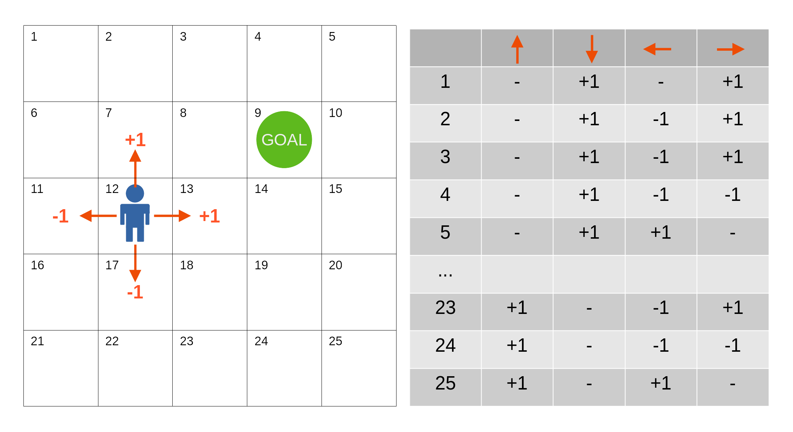

Symbolic Knowledge Extraction and Injection:
Theory and Methods
Giovanni Ciatto and Matteo Magnini
Dipartimento di Informatica — Scienza e Ingegneria (DISI), Sede di Cesena,
Alma Mater Studiorum—Università di Bologna
(last built on: 2025-06-16)
Link to these slides
Background
Quick overview on symbolic vs. sub-symbolic AI
Overview on AI

- wide field of research, with many sub-fields
- each sub-field has its own relevant tasks (problems) …
- … and each task comes with many useful methods (algorithms)
Symbolic vs. Sub-symbolic AI
Two broad categories of AI approaches:

Examples of Symbolic AI (pt. 1)
- Logic programming: SLD resolution (e.g., Prolog)
- Knowledge representation: Semantic Web (e.g., OWL), Description Logics (e.g., ALC)
- Automated reasoning: Theorem proving, Model checking
- Planning: STRIPS, PDDL
Examples of Symbolic AI (pt. 2)
Logic programming with SLD resolution

Examples of Symbolic AI (pt. 3)
Ontology definition in OWL

Examples of Symbolic AI (pt. 4)
Model-checking (as opposed to testing)
Examples of Symbolic AI (pt. 5)
Planning in STRIPS
Available actions
grab(X): grabs blockXfrom the tableput(X): puts blockXon the tablestack(X, Y): stacks blockXon top of blockYunstack(X, Y): un-stacks blockXfrom blockY
What do these symbolic approaches have in common?
-
Structured representations: knowledge (I/O data) is represented in a structured, formal way (e.g., logic formulas, ontologies)
-
Algorithmic manipulation of representations: each approach relies on algorithms that manipulate these structured representations following exact rules
-
Crisp semantics: the meaning of the representations is well-defined, and the algorithms produce exact results
- representations are either well-formed or not, algorithms rely on rules which are either applicable or not
-
Model-driven: algorithms may commonly work in zero- or few-shot settings, humans must commonly model and encode knowledge in the target structure
-
Clear computational complexity: the decidability, complexity, and tractability of the algorithms are well understood
Examples of Sub-symbolic AI (pt. 1)
-
Machine learning: supervised, unsupervised, and reinforcement learning
- Supervised learning: fitting a discrete (classification) or a continuous function (regression) from examples
- Unsupervised learning: clustering, dimensionality reduction
- Reinforcement learning: learning a policy to maximize a reward signal, via simulation
-
Probabilistic reasoning: Bayesian networks, Markov models, probabilistic logic programming
Examples of Sub-symbolic AI (pt. 2)
Supervised learning

Examples of Sub-symbolic AI (pt. 3)
Supervised learning – Classification vs. Regression (1/2)
Data separation vs. curve fitting:

Examples of Sub-symbolic AI (pt. 4)
Supervised learning – Classification vs. Regression (2/2)
Focus on the target feature:
Examples of Sub-symbolic AI (pt. 5)
Unsupervised learning – Clustering

Examples of Sub-symbolic AI (pt. 6)
Unsupervised learning – Reinforcement learning (metaphor)

Examples of Sub-symbolic AI (pt. 7)
Reinforcement learning – Reinforcement learning (policy)
What do these sub-symbolic approaches have in common?
-
Numeric representations: knowledge (I/O data) is represented in a less structured way, often as vectors/matrices/tensors of numbers
-
Differentiable manipulation of representations: algorithms rely on mathematical operations involving these numeric representations, most-commonly undergoing some optimization process
- e.g., sum, product, max, min, etc.
-
Fuzzy/continuous semantics: representations are from continuous spaces, where similarities and distances are defined in a continuous way, and algorithms may yield fuzzy results
-
Data-driven + Usage vs. training: algorithms are often trained on data, to be later re-used on other data
- usage is commonly impractical or impossible without training
-
Unclear computational complexity: strong reliance on greedy or time-limited optimization methods, lack of theoretical guarantees on the quality of the results
Why the wording “Symbolic” vs. “Sub-symbolic”? (pt. 1)
Local vs. Distributed Representations
-
Local $\approx$ “symbolic”: each symbol has a clear, distinct meaning
- e.g.
"bear"is a symbol denoting a crisp category (either the animal is a bear or not)
- e.g.
-
Distributed $\approx$ “non-symbolic”: symbols do not have a clear meaning per se, but the whole representation does
- e.g.
"swim"is fuzzy capability: one animal may be (un)able to swim to some extent
- e.g.
Let’s say we need to represent $N$ classes, how many columns would the tables have?
Why the wording “Symbolic” vs. “Sub-symbolic”? (pt. 2)
What is a “symbol” after all? Aren’t numbers symbols too?
According to Tim van Gelder in 1990:
Symbolic representations of knowledge
- involve a set of symbols
- which can be combined (e.g., concatenated) in (possibly) infinitely many ways,
- following precise syntactical rules,
- where both elementary symbols and any admissible combination of them can be assigned with meaning
Why “Sub-symbolic” instead of “Non-symbolic” or just “Numerical”?
-
There exist approaches where symbols are combined with numbers, e.g.:
- Probabilistic logic programming: where logic statements are combined with probabilities
- Fuzzy logic: where logic statements are combined with degrees of truth
- Bayesian networks: a.k.a. graphical models, where nodes are symbols and edges are conditional dependencies with probabilities, e.g.

-
These approaches are not purely symbolic, but they are not purely numeric either, so we call the overall category “sub-symbolic”